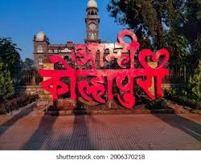

Kolhapur – A Land of Culture & Wonders
Kolhapur – A Land of Culture & Wonders

Rankala Lake in Kolhapur, Maharashtra, was formed after an earthquake in the 9th century transformed a stone quarry into a lake by allowing water from an underground source to accumulate.

Pre-8th Century: Before the 8th century, the area was an extensive stone quarry. 9th Century Earthquake: An earthquake caused significant structural damage to the quarry, leading to the accumulation of water from an underground source. Formation of the Lake: This accumulated water formed the Rankala Lake we know today. Historical Significance: The lake is a popular spot for residents of Kolhapur to spend their holidays and weekends.

Temple and Gardens: The lake features a Hindu temple called "Sandhyamath" with a large Nandi and is surrounded by gardens and pathways. Shalini Palace and Padmaraje Garden: Towards the north of the lake is the "Shalini Palace" and towards the north-east is the "Padmaraje Garden".
Mythological Beliefs: According to local Hindu beliefs, Lord Shiva uses the Nandi, moves a single wheat grain towards the lake, and backs about a distance of single rice grain daily. Hindu beliefs state that if Lord Shiva reaches Rankala, the apocalypse will begin